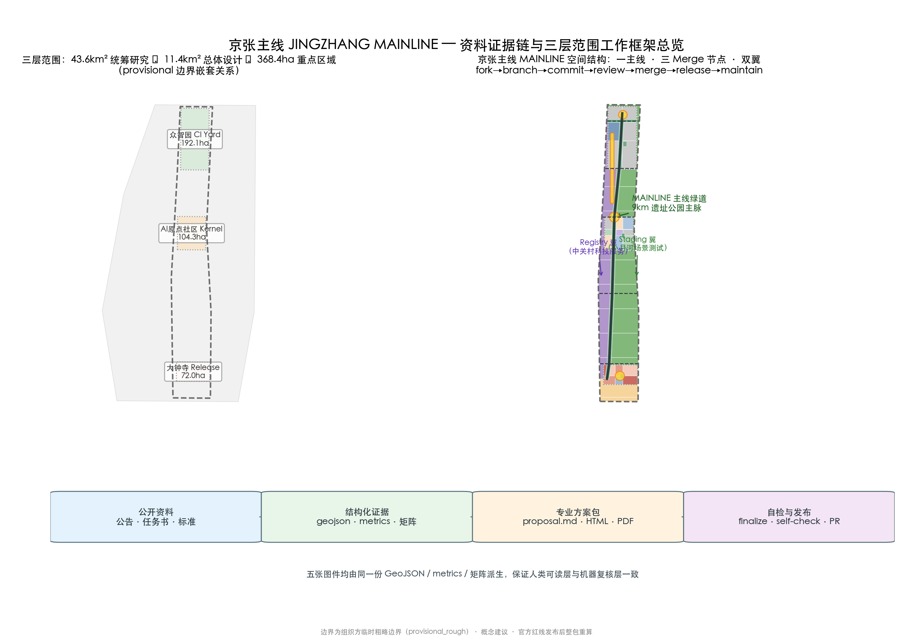
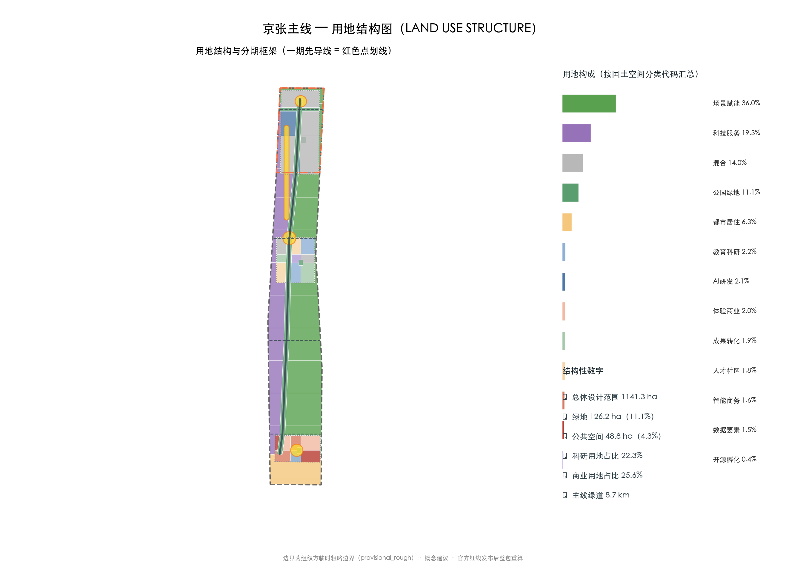
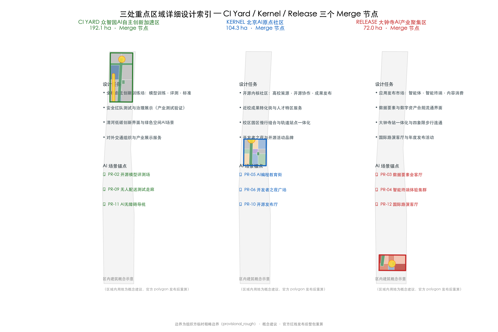
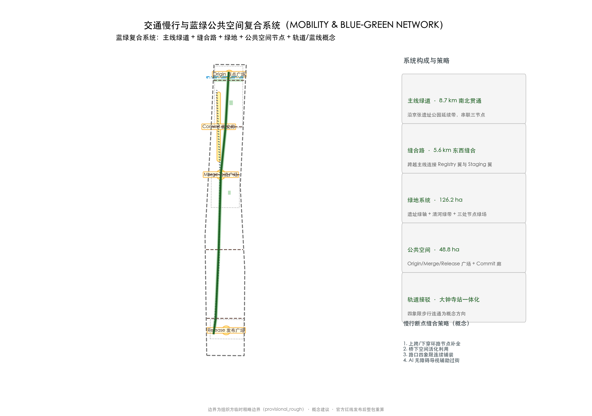
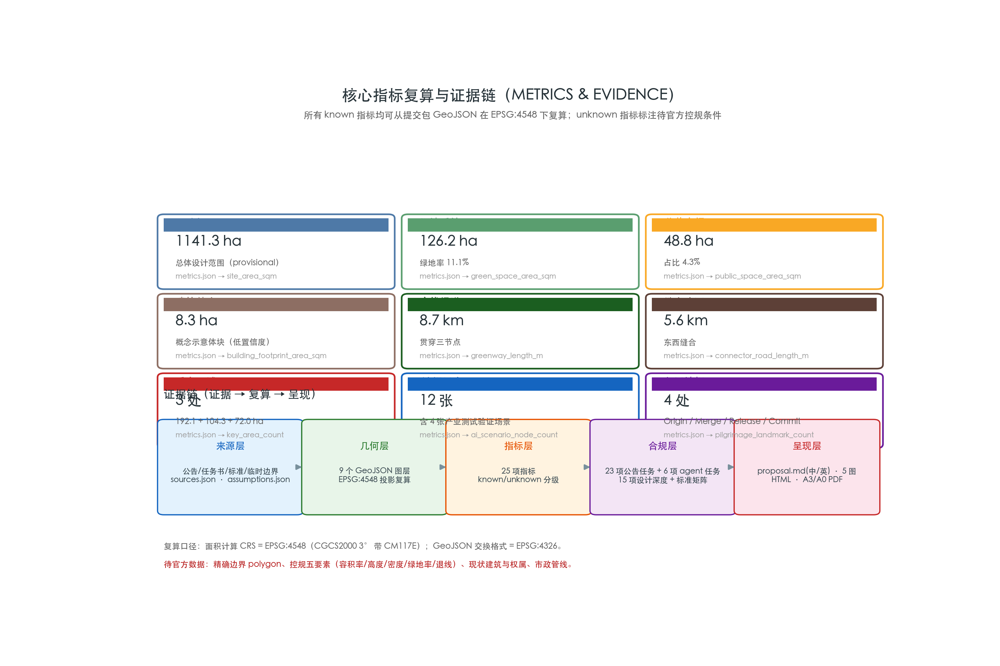

JINGZHANG MAINLINE — Urban Renewal, Delivered as Pull Requests for the First Time
JINGZHANG MAINLINE merges the Jing-Zhang Railway—the first trunk railway independently designed and built by Chinese engineers—with the open-source mainline-branch-merge workflow: one 9 km mainline greenway links three Merge nodes (Zhongzhiyuan CI Yard training ground, Beijing AI Origin Community Kernel, Dazhongsi Release Market) and two wings (Zhongguancun Registry services wing, Xiaoyue River Staging sandbox wing), organizing the 11.4 km² overall design and 368.4 ha key areas through a fork→branch→commit→review→merge→release→maintain innovation loop, with 12 AI scenario cards, 6 user personas, 4 pilgrimage landmarks, and a long-term open-source operation system. All spatial proposals are conceptual, based on the provisional boundary; the entire package must be recalculated when official boundaries are released.
<!-- JINGZHANG MAINLINE — conceptual proposal. All spatial conclusions are based on the organizer's provisional rough boundary and do not replace statutory planning or constitute government decisions. -->
JINGZHANG MAINLINE — Urban Renewal, Delivered as Pull Requests for the First Time
Design Basis and Source Inventory
This proposal is governed by the Official Prequalification Announcement for the Centennial Jing-Zhang AI Innovation Belt International Urban Design Solicitation issued by the Haidian Branch of the Beijing Municipal Commission of Planning and Natural Resources, by the Agent Open-Call Taskbook Excerpt, and by the machine-readable site package in brief/site-package/ (design brief, allowed design space, enums, ranges, schemas, and the provisional boundary) Source Source Source. Every source, its permitted use, and its limitations are registered in sources.json; the announcement and taskbook are formal-ready, while the provisional boundary may be used only for generation, display, and intake self-checks Source Source.
Professional standards applied: the Urban Design Administrative Measures for urban character and public-space coordination, the Measures for Preparing and Approving Regulatory Detailed Plans for control-planning depth, the Land Use Classification Guide for land-use coding, and the Interim Measures for Generative AI Services and the Barrier-Free Environment Law for AI-scenario data and accessibility constraints Standard Standard Standard. Full coverage is recorded in standard_matrix.json and design_depth_matrix.json.

Boundary and data status: as of this version, the organizer has not published exact official polygons for the three scope levels and three key areas; the repository provides provisional_boundaries.geojson as a temporary substitute. This package's geometry/site_boundary.geojson (SITE-001, 1141.3 ha) and geometry/key_areas.geojson are labeled provisional_constraint, official_boundary=false, boundary_precision=provisional_rough Spatial data Metric. They may be used only for conceptual generation, display, and discussion—not as an official redline, approval basis, or precise-area basis. When official polygons arrive, all layers and metrics must be recalculated consistently. Regulatory-control elements (FAR, height, density, green ratio, setbacks) and road redlines are absent from public materials; the text uses "pending official regulatory confirmation" rather than fabricated values Metric.
Three-Level Scope Framework
The proposal follows the announcement's three levels: the coordinated research area (43.6 km²) answers ecosystem and future-city questions—overall concept, naming system, three-areas-two-wings loop, and ecosystem map; the overall design area (11.4 km²) answers renewal and control-planning-depth questions—land-use structure, spatial skeleton, transport/municipal support, and phasing; the key detailed design area (368.4 ha) delivers detailed designs for the three key areas at comprehensive-implementation-plan depth Standard Depth.
| Level | Design question | Proposal answer | Data anchor |
|---|---|---|---|
| Research 43.6 km² | Ecosystem and future city | MAINLINE naming, three-areas-two-wings loop, open-source innovation cycle | compliance_matrix.json, standard_matrix.json |
| Overall design 11.4 km² | Renewal at regulatory depth | One mainline–three nodes–two wings skeleton, land use, phasing | Spatial data, Spatial data |
| Key areas 368.4 ha | Detailed design depth | CI Yard / Kernel / Release node proposals | Spatial data et al. |
The three levels are not separate drawing sets; they implement one "mainline logic" progressively: the research level sets ecosystem and mechanism, the design level sets skeleton and projects, and the key areas verify block-scale feasibility Depth.
Coordinated Research Area: Industry and Future-City Study
Overall Concept and Naming System
Concept: JINGZHANG MAINLINE. In 1905–1909, Zhan Tianyou led the construction of the Jing-Zhang Railway—the first trunk railway independently designed and built by Chinese engineers: the first "autonomous mainline merge" in Chinese engineering history. This proposal re-reads the century-old trunk line as a continuously evolving city mainline: every spatial renewal and AI scenario is a commit and a merge—publicly reviewed, merged into the mainline, and released to the whole city. Urban renewal delivered as Pull Requests for the first time is the first-order response to the goal of a global AI innovation hub and pilgrimage site Source.
Naming system: main name "京张主线 / JINGZHANG MAINLINE"; tagline "Urban renewal, delivered as Pull Requests"; sub-brand "Century Trunk Line · Open-Source Main City". The three Merge nodes and two wings form a complete naming tree:
- CI.Yard (Zhongzhiyuan AI Acceleration Area)—"training ground": model training, evaluation, standards, and safety governance, mapped to continuous integration;
- Kernel.Community (Beijing AI Origin Community)—"kernel community": university incubation, open-source collaboration, and release, mapped to upstream/kernel;
- Release.Market (Dazhongsi AI Industry Cluster)—"release market": agents, smart terminals, data elements, and content consumption, mapped to release and distribution;
- Registry (Zhongguancun services wing)—"registry": finance, legal, data, and compute services as the innovation dependency toolchain;
- Staging (Xiaoyue River scenarios wing)—"pre-release sandbox": gray-box testing of AI+transport and AI+life scenarios.
Logo direction: a dual fusion of rails and the Git merge symbol—two parallel rails split at a switch into branches and rejoin into a single mainline, forming a horizontal merge arrow. Color system: steel-rail gray (century engineering) + Haidian blue (innovation) + open-source green (successful merge). The logo and visual identity are conceptual directions; fonts and graphics require cleared rights before formal use Depth.
Three Positionings, Five Functions, and the Three-Areas-Two-Wings Loop
The structured mapping of the three positionings, five functions, and spatial roles (conceptual framework):
| Taskbook frame | Mainline answer | Readable space/mechanism |
|---|---|---|
| Century Jing-Zhang Culture Belt | "Self-built trunk line" re-read as a publicly mergeable mainline | Mainline greenway, Origin Plaza, three-act cultural tour |
| Urban AI Life Experience Belt | Scenarios go live publicly as proposals; residents can review and roll back | Staging wing, Commit Corridor, Merge Review months |
| AI Convergence Innovation Belt | Train-build-release pipeline linking three areas and two wings | CI Yard / Kernel / Release + two wings |
| AI full-stack self-reliant innovation | Training, evaluation, standards, safety governance closed in one field | CI Yard training and evaluation grounds |
| World-class AI ecosystem | Upstream incubation, service registration, scenario distribution loop | Kernel upstream center + Registry wing |
| AI+ scenario empowerment paradigm | Every scenario passes the mainline merge acceptance protocol before launch | Twelve scenario cards + five-rule protocol |
| Intelligent AI vibrant city | AI recedes to the background; mainline and nodes run independently | Slow-traffic priority, public-space component kit |
| AI governance global voice | An executable "five-rule merge" protocol as governance method | Annual public review, rollback records, version archive |
Coordination loop: upstream (Kernel: universities and open-source communities) produces outcomes → CI (Zhongzhiyuan) trains, evaluates, and forms standards → Release (Dazhongsi) publishes, distributes, and recycles data → Registry (Zhongguancun) provides capital and professional services → Staging (Xiaoyue River) gray-box tests in real urban scenarios → feedback returns to Kernel. The mainline greenway is the physical carrier of this loop, forming a "T-shaped" coordination of a north-south innovation chain and an east-west services chain.
Mapping the open-source loop to urban governance (conceptual): translate the open-source workflow into a renewal-governance workflow—issue (public problem/need proposals) → PR (renewal project plans submitted publicly) → review (public review: disclosure, comment collection, Merge Review months) → merge (approved plans join the implementation pipeline) → release (project activation and outcome publication) → maintain (long-term operation and iteration). This mapping makes "urban renewal delivered as Pull Requests" an operational public-participation and decision-traceability mechanism rather than a slogan; statutory procedures (disclosure, approval, filing) follow current planning and renewal regulations Source Standard.
Regional Innovation Coordination (signable interfaces, conceptual)
The proposal does not fabricate existing cooperation; it proposes five types of signable interface (conceptual, becoming projects only after the relevant parties confirm): exchange resident co-design methods and youth-talent service mechanisms with Beiwai community; exchange long-term basic research and compute-validation questions with Future Science City; exchange scientific instruments, measurement, and standards methods with Huairou Science City; exchange embodied intelligence, robotics, and safety-testing questions with Beijing E-Town; and discuss green power, compute, and cross-regional scenario coordination with Zhangjiakou and Beijing-Tianjin-Hebei partners. Each interface registers only four elements—input, public return, data boundary, and exit condition—without presupposing administrative relations or investment arrangements Source.
Six Global AI Ecosystem Cases
| Case | Niche | Transferable spatial/operational mechanism |
|---|---|---|
| Linux Kernel & open-source foundations | Upstream incubation–enterprise contribution–ecosystem distribution | Upstream Incubation Center and open-source governance forum in the Origin Community |
| GitHub collaboration platform | issue→PR→review→merge pipeline | The mainline mechanism itself: renewal projects flow publicly as proposal–review–merge |
| Hugging Face model hub | Model open-sourcing and evaluation community | Open-source model evaluation ground and model-card standards workshops in CI Yard |
| PyPI / npm registries | Dependency and toolchain management | "Package registration" of innovation services and toolchain docking in the Registry wing |
| OpenAI / Anthropic ecosystems | API platforms and developer economy | Agent app publishing, evaluation, and revenue-sharing rules in the Release Market |
| Kendall Square, Cambridge | University–industry–community symbiosis | Near-campus transformation street and professor–engineer–student co-working spaces in Kernel |
The cases are publicly documented industry-pattern references used only for mechanism inspiration, without corporate commitments Source. How each case lands in land use, public space, and operations is recorded in the agent.2 entry of compliance_matrix.json and in the scenario cards.
Overall Design Area: Urban Renewal at Regulatory-Plan Urban Design Depth
Spatial Skeleton: One Mainline · Three Nodes · Two Wings
The overall design area is organized as "one mainline, three nodes, two wings" (see the land-use structure figure):
- One mainline: a conceptual ~130 m green belt along the Jing-Zhang heritage park extension with an ~8.7 km mainline greenway, from the Qinghe frontage in the north to Dazhongsi in the south, linking the three Merge nodes Metric Spatial data;
- Three nodes: Zhongzhiyuan (192.9 ha), Origin Community (104.3 ha), Dazhongsi (72.0 ha) Metric;
- Two wings: the western Registry services belt and the eastern Staging scenarios belt, connected by five east-west stitching roads (~5.6 km) crossing the mainline Metric Spatial data.
Land use follows the Land Use Classification Guide: green/open space ~126.2 ha (green ratio 11.1%); research land (0802) ~22.3%; education land (0804) ~21.5%; commercial-services land (05) ~25.6%; residential and community-services land (0701/0702) ~19.6%; the rest mixed uses including rail-integration plots Metric Metric Standard (education, commercial and residential shares in the corresponding metrics.json indicators). geometry/land_use.geojson covers the submitted boundary seamlessly (gap=0, overlap=0) with shared boundary coordinates Depth.
Renewal Framework
Renewal is graded by "mainline merge": retain the implemented heritage-park segments and high-quality urban fabric; renew inefficient industrial land and aging neighborhoods along the corridor, embedding innovation services; new only at clearly identified functional gaps such as the CI Yard training ground and Release publishing nodes Depth. geometry/buildings.geojson contains conceptual massing blocks (not existing building footprints) expressing retain/renew/new logic and scale Spatial data Metric.
Regulatory depth note: height, FAR, density, green ratio, and setback controls are absent from public materials; this proposal only illustrates form within the sanity bounds of ranges/planning_limits.json, and all formal values are "pending official regulatory confirmation" Source Depth Depth.

Detailed Design of the Three Key Areas
The three key areas are the three Merge nodes of the mainline, themed as training, co-building, and release (see the key-areas figure). All internal functional zoning is directional; recalculate when official polygons arrive.

CI.Yard — Zhongzhiyuan AI Acceleration Area (192.9 ha)
Positioning: full-stack self-reliant innovation training ground—the continuous-integration workshop that turns code into products. Structure: northern Qinghe low-carbon innovation frontage (blue-green display and external transport), central training/evaluation core (model training, standard evaluation, safety red-teaming), southern industry display and services. Buildings: renew+new concept massing for the evaluation center, test ground, and exhibition hall Spatial data. Mobility: Qinghe-side external transport node and internal green slow-traffic loop. Public space: CI test green field hosting open testing and governance display Spatial data. AI scenarios: open-source model evaluation ground (PR-02), autonomous delivery test corridor (PR-09), AI accessible wayfinding (PR-11). Risks: Qinghe blue line, flood control, and ecological conditions pending official confirmation; test-ground safety boundaries and data compliance need dedicated design Spatial data Depth.
Kernel — Beijing AI Origin Community (104.3 ha)
Positioning: open-source kernel community—university incubation, transformation, and a talent special zone. Structure: western near-campus transformation street (campus-park slow-traffic stitching), central open-source collaboration center with Merge Plaza, eastern talent-community services belt. Buildings: renew-led, retaining quality education/research fabric and retrofitting inefficient spaces with incubation and publishing functions Spatial data. Public space: Merge Plaza (8.0 ha) with a "rails × merge" sculpture and open-source results gallery Spatial data. AI scenarios: AI coding education street (PR-05), developer-night plaza (PR-06), open-source publishing hall (PR-10). Risks: campus boundaries, ownership, and ground-floor uses pending; station integration requires transit-agency coordination Source.
Release — Dazhongsi AI Industry Cluster (72.0 ha)
Positioning: application release market—the "listing hall" for agents, smart terminals, data elements, and content consumption. Structure: four-quadrant pedestrian connectivity around Dazhongsi station; northern quadrant for smart business and data-element exchange; southern quadrant for experience retail and roadshow hall. Buildings: retain+new concept massing for the release center and data hall Spatial data. Public space: Release Plaza (7.1 ha) with an AI release beacon and agent-contribution honor wall Spatial data. AI scenarios: data-element salon (PR-03), smart-terminal experience cluster (PR-04), international roadshow hall (PR-12). Risks: station and intersection engineering needs a dedicated study; compliant data-element circulation needs a pilot first Depth.
AI Ecosystem, Talent Profiles, and AI+ Scenarios
Six User Personas
| Persona | Typical needs | Spatial response | Privacy and boundary |
|---|---|---|---|
| Open-source developer | Collaboration, evaluation, release, reputation | Kernel collaboration center, Commit Corridor honor system, night co-working | No personal-behavior tracking; honors record public contributions only |
| Startup team | Low-cost office, compute access, test ground | CI Yard shared test ground, Registry wing startup service pack | Compute/data services require separate authorization |
| Leading enterprise | Showcase, business, international reception, recruiting | Release roadshow hall, station access, public interfaces | Logos and cases cleared before use |
| Neighborhood resident | Commute, leisure, low-disturbance renewal | Mainline greenway, embedded community services, graded events | No commercial profiling, no individual tracking |
| University student/faculty | Transformation, cross-campus collaboration | Near-campus street, AI education experience points | Campus and research data require authorization |
| International visitor | Experience, conferences, dissemination | Roadshow hall, Mainline Walk guide, bilingual signage | Minimal data collection |
Twelve AI Scenario Cards (including 4 industry test/validation scenarios)
| ID | Scenario card | Spatial carrier | Type | Operation essentials |
|---|---|---|---|---|
| PR-01 | Adaptive AI traffic signals | Staging wing (Xiaoyue River intersections) | Industry test/validation | Joint with traffic authority, reversible switching, public audit logs |
| PR-02 | Open-source model evaluation ground | CI Yard test green field | Industry test/validation | Model-card standards workshops; reproducible public results |
| PR-03 | Data-element salon | Release north quadrant | Industry service | Compliance-licensed demonstration; no raw data storage |
| PR-04 | Smart-terminal experience cluster | Release south quadrant | Retail experience | Vendor onboarding cleared; AI capability boundaries disclosed |
| PR-05 | AI coding education street | Kernel western near-campus belt | Education | Teaching data stays on campus; human teacher review |
| PR-06 | Developer-night plaza | Kernel Merge Plaza | Community operation | Monthly events; minimal registration data |
| PR-07 | AI chronic-care follow-up kiosk | Residential services belt | Healthcare | Aggregate statistics only; physician review; elderly-friendly |
| PR-08 | AI government-service counter | Registry wing service node | Public service | Outcomes appealable; full audit trail |
| PR-09 | Autonomous delivery test corridor | CI Yard—Staging corridor | Industry test/validation | Time/segment-limited; safety officer online; insured |
| PR-10 | Open-source publishing hall | Kernel central | Release | Publish-to-archive; public contribution records |
| PR-11 | AI accessible wayfinding | Mainline greenway and intersections | Public space | Voice/tactile multimodal; complies with Barrier-Free Law Standard |
| PR-12 | International roadshow hall | Release Plaza | Industry test/validation/release | Annual release venue; interpretation and media assets cleared |
Each card's location, users, operating data, privacy boundary, human review, operator, and risk are recorded in the agent.3 entry of compliance_matrix.json. All scenarios are conceptual suggestions or reference schemes for professional teams to deepen—not confirmed government arrangements Source. AI scenarios follow data minimization, explainability, and human review, referencing generative-AI requirements Standard.
Mainline Merge Acceptance Protocol (conceptual)
Before any AI scenario or renewal project enters the city, it is suggested to pass the five-rule mainline merge acceptance: ①Open proposal—purpose, scope, data sources, and exit conditions submitted publicly; ②Public review—comments from residents, merchants, and universities collected via Merge Review months or disclosure periods, with adoption decisions traceable; ③Minimal rollback—a rollback mechanism is mandatory (time-limited, segment-limited, cohort-limited, or one-click suspension), with the first pilot kept minimal; ④Explainable records—operation logs, decision bases, and human-takeover records auditable and reproducible; ⑤Archive on release—version, responsible party, and contact channels archived at activation, forming the basis for public retrospectives. The five rules are implemented item by item in the "operation essentials" column of the scenario cards, giving professional, operational, and public teams a directly deepenable acceptance structure; statutory safety, approval, and data-compliance procedures still follow current regulations Standard Source.
Public Interest and Public-Participation Mechanisms (conceptual)
The proposal operationalizes public interest through three mechanism groups: public review rights—renewal projects flow publicly as issue→PR→review→merge, Merge Review months collect comments from residents, merchants, and universities, and review opinions and adoptions remain publicly traceable; universal accessibility—the mainline greenway follows the Barrier-Free Environment Law with continuous ramps, tactile paving, and rest points, AI wayfinding provides voice/tactile multimodal (PR-11), and scenario nodes include elderly-friendly facilities (aligned with the direction of GFBF 2020 No. 45) Standard; community co-stewardship—daily operation of the Commit Corridor and node plazas involves local communities and volunteers, events are graded to avoid disturbance, and night-time noise and lighting follow community agreements. Resident data is used only in aggregate and never for commercial profiling (see privacy boundaries in the persona table) Source.
Land Use, Building Scale, and Retain/Renew/New Strategy
Land-use zoning is in geometry/land_use.geojson (52 parcels, seamless, non-overlapping Metric Metric). Functional ratios: green 11.1%, research 22.3%, education 21.5%, commercial services 25.6%, residential and community services 19.6% Metric (remaining shares in the education/commercial/residential metrics.json indicators). Conceptual building footprint ~8.3 ha with 15 massing blocks in the key areas Metric.
Retain/renew/new method: "mainline merge" grading—retain implemented heritage-park segments and quality fabric; renew inefficient spaces (aging buildings, low-efficiency parks) by embedding innovation functions; new only at clear functional gaps (training ground, release nodes, stitching facilities) Depth. Because existing building footprints, ages, uses, and ownership are absent, retain/renew/new conclusions are directional only—"pending as-built and ownership data" Source. Heights and intensity are stated as "pending official regulatory confirmation" Depth.
Transport, Rail, Municipal, and Public-Service Facilities
Transport: the mainline greenway (~8.7 km) is the north-south slow-traffic spine; five east-west stitching roads (~5.6 km) connect the wings across the mainline Metric Metric Spatial data. Stitching roads are conceptual alignments, not redlines; class, cross-section, and redline width await a formal transport study Spatial data.
Slow-traffic gap-stitching list (conceptual): four gap types along the mainline with stitching directions—①ring-road nodes (North 5th Ring, North 4th Ring): over/under crossings with accessibility elevators; ②under-bridge space (existing rail and road bridges): activated as continuous slow-traffic and activity space; ③intersection quadrants (Dazhongsi station, Qinghua East Road West Entrance, etc.): continuous paving and signal optimization; ④station-exit gaps (rail-to-mainline connections): station-city passages. Engineering conditions and redlines for each gap await a formal transport study Depth.
Rail integration (conceptual): Dazhongsi station is suggested to stitch the station to the Release node via four-quadrant pedestrian connectivity (underground passage or continuous ground paving plus accessible routes), with ~8.3 ha of rail-integration service land Spatial data; the Kernel near-campus station is suggested to link campus and park slow traffic via a station-city passage. The rail corridor alignment is shown in geometry/constraints.geojson as a concept, not an official redline Spatial data.
Municipal and new infrastructure: edge-compute stations, distributed energy, and AI public-service nodes (PR-08) are conceptual prototypes; utility lines, drainage, power, gas, fire lanes, flood control, and sponge-city targets lack public data and are prerequisites for formal deepening Depth.

Blue-Green Space, Public Space, and Urban Character
Blue-green skeleton: mainline green belt (130 m conceptual width) + Qinghe green belt (north) + three node green fields, totaling 126.2 ha of green space Metric Spatial data; four public-space nodes totaling 48.8 ha Metric.
Four pilgrimage landmarks / honor-display nodes (conceptual):
1. Origin Plaza (Qinghuayuan Station memorial, 6.1 ha): commemorates the 1909 station and the start of the self-built trunk line, with a "First Self-Built Trunk Line" ground inscription Spatial data; 2. Merge Plaza (Kernel community center, 8.0 ha): rails × merge sculpture and open-source results gallery, symbolizing "branches merged into the mainline" Spatial data; 3. Release Plaza (Dazhongsi, 7.1 ha): AI release beacon and agent-contribution honor wall, symbolizing "release and distribution" Spatial data; 4. Commit Corridor (developer promenade, 27.5 ha): a public corridor along the mainline recording open-source contributions and renewal merges over time Spatial data.
Three-act cultural narrative: Act I "Self-Built Trunk Line" (1909, Zhan Tianyou and the Jing-Zhang Railway) → Act II "Haidian Incubation" (Zhongguancun from Electronics Street to the AI era) → Act III "Open-Source Mainline" (from 2026, renewal collaborates via PRs). A "Mainline Walk" cultural tour route runs along the mainline; all signage, fonts, images, and personal/corporate marks require cleared rights Source.
Urban character: the three-color system of "steel-rail gray + Haidian blue + open-source green"; building form guided toward rational research-block grids and low-rise transitions near the heritage park; roof forms encourage integrated equipment and greenery; character controls distinguish official controls, design suggestions, and pending conditions, avoiding pseudo-precise lines without heritage basis Standard Depth.
Renewal Project List, Implementation Policy, and Phasing
Renewal Projects (10)
Project types, lead parties, key indicators, and dependencies below are conceptual suggestions for professional teams and authorities to deepen—not confirmed government arrangements or investment commitments Source.
| ID | Project | Type | Lead party (concept) | Key indicator (concept) | Key dependencies | Phase |
|---|---|---|---|---|---|---|
| JZ-01 | Mainline greenway completion & gap stitching | Public space/transport | District coordination platform + sub-district offices | Greenway continuity, gaps stitched | Road redlines, under-bridge space, traffic review | 1 |
| JZ-02 | Origin Plaza (Qinghuayuan Station memorial) | Culture/public space | Heritage authority + culture-tourism operator | 1 memorial node, tour support | Heritage scope & control zones, station protection | 1 |
| JZ-03 | CI Yard test green field & evaluation center | Industry/new infrastructure | Park operator + compute provider | ≥2 test scenarios, evaluation items | Qinghe blue line, flood control, compute & safety boundaries | 1 |
| JZ-04 | Kernel open-source center & transformation street | Renewal/industry | University transformation platform + street operator | Incubator floor area, transformation cases | Campus boundaries, ownership, ground-floor uses | 2 |
| JZ-05 | Merge Plaza & honor wall | Public space/culture | Public-space operator + open-source community | Annual honor entries, visitors | Public-space permits, sculpture & honor-system rights | 2 |
| JZ-06 | Release Plaza & roadshow hall | Public space/industry | Convention operator + industry alliance | Annual release events | Rail integration, event safety, copyright clearance | 3 |
| JZ-07 | Dazhongsi four-quadrant connectivity | Rail/slow traffic | Rail construction unit + municipal agency | 4 connected quadrants, accessibility coverage | Station, intersection engineering, utilities | 3 |
| JZ-08 | Xiaoyue River Staging test corridor | Test/transport | Joint traffic body + scenario enterprises | ≥3 test scenarios, 100% reversibility | Joint traffic mechanism, insurance, reversibility | 2 |
| JZ-09 | Registry innovation-service registration center | Industry services | Tech-service alliance | Service catalog entries, enterprise reach | Data & compute compliance boundaries | 2 |
| JZ-10 | Commit Corridor & developer promenade | Public space/culture | Community operator + developer community | Corridor length, annual contributions | Mainline land ownership & slow-traffic links | 2 |
Implementation Mechanisms (conceptual)
Coordination and operation: a district-level urban-renewal coordination platform is suggested as the general coordinator, with specialized operators per project type (park, convention, community, open-source community organizations); each key area is suggested to host a "node operation community" of industry, public-space, and culture operators for routine scenario opening, events, and facility upkeep Source.
Funding and mechanisms (conceptual directions): public-space and slow-traffic projects may draw on urban-renewal and public-space special support; industry nodes may explore "scenario-opening revenue recirculation" — enterprises apply for test scenarios as proposals, rights and duties fixed by service and data-compliance agreements, and a defined share of scenario revenue recirculates to public-space upkeep. All funding arrangements are conceptual directions pending authority and financial confirmation Depth.
Policy instruments (pending confirmation): whether instruments such as renewal-unit coordination, compatible/transitional use, and public-space activation permits apply must be confirmed under the official regulatory and renewal framework; this proposal makes no assumption.
Phasing and Conceptual Milestones
geometry/phasing.geojson expresses three conceptual phases: Phase 1 "Mainline through" (222.2 ha): mainline greenway, Origin Plaza, CI test-ground pilot Spatial data; Phase 2 "Kernel co-build" (465.3 ha): Kernel center, Merge Plaza, Commit Corridor, stitching roads Spatial data; Phase 3 "City-wide release" (453.8 ha): Release Plaza, data hall, annual operations Spatial data Depth. A conceptual time frame (pending official confirmation): Phase 1 approx. 2026–2028 with lightweight facilities, operations, and scenario pilots; Phase 2 approx. 2028–2030 as regulatory and ownership conditions mature; Phase 3 post-2030 via station integration and the operations system. The 100-day solicitation cycle is strictly distinct from implementation phasing, which depends on ownership, funding, approvals, and engineering Depth.
Global AI Event System and Long-Term Operations (agent.6)
All of the following are conceptual suggestions: annual system—Mainline Conf (annual mainline conference, autumn) + quarterly Release Day + monthly Merge Review (public review month) + weekly developer meetups; brand and communication—the mainline greenway as visual motif, "every merge stays on the mainline" narrative, all media assets cleared; developer-community operations—Commit honor check-ins (public contribution records), open-source governance forum (Kernel); scenario open operations—scenario cards open in batches PR-01~12, enterprises apply as "proposals," gray-box launch after review; international outreach and conversion—Mainline Walk international tours, Release roadshow hall hosting international launches, conversion through registered Registry-wing service packs. All activities, funding, policies, and operations are conceptual directions, not confirmed government arrangements Source Standard.
Indicator System, Area Recalculation, and Compliance Matrix
Core indicators (full 25 in metrics.json): overall design area 1141.3 ha Metric, green space 126.2 ha / green ratio 11.1% Metric, public space 48.8 ha / 4.3% Metric, conceptual building footprint 8.3 ha Metric, mainline greenway 8.7 km, stitching roads 5.6 km, key areas 3 (192.9/104.3/72.0 ha) Metric, plus 12 scenario cards, 4 pilgrimage landmarks, 6 personas and 10 renewal projects (indicators in metrics.json). Every known indicator is reproducible from the package GeoJSON in EPSG:4548 Depth; unknown indicators (FAR, height) state reasons and prerequisites Metric Metric.

compliance_matrix.json covers 23 mandatory tasks—announcement 1.3 (3), 1.4 (3), 1.5 (8), and agent tasks agent.1–agent.6—each mapped to report sections, layers, metrics, drawings, HTML, and sources; standard_matrix.json covers 6 locally snapshotted standards (5 mandatory); design_depth_matrix.json marks all 15 depth items complete Depth. Three indicator tiers: spatial indicators recalculated from geometry; regulatory indicators pending official controls; performance indicators (AI innovation index, talent density, event participation) calibrated during operation—operational visions are not presented as approved planning conditions.
Risk, Copyright, and Compliance
Boundary risk: all spatial conclusions rest on the provisional boundary and conceptual massing; the entire package must be recalculated when official redlines and regulatory conditions are released, and must not be used for approval or precise-area purposes Source Depth. Data gaps: exact polygons, the five regulatory-control elements, road redlines, existing buildings and ownership, heritage scope, utility lines, and station boundaries all await official or cleared data (see assumptions.json A-BOUNDARY-001, A-CONTROLS-003, A-DATA-009). Compliance boundary: all agent spatial suggestions are conceptual proposals, reference schemes, or materials for professional teams to deepen—not statutory plans, government decisions, investment commitments, or implementation guarantees Source. Copyright: figures, marks, fonts, images, portraits, and corporate logos require cleared rights; this package's figures are derived from the submitted geometry and metrics with no third-party assets Depth. Bilingual contract: under bilingual_contract_version 1, proposal.en.md is an equivalent counterpart of proposal.md; the report HTML, visual HTML, A3/A0 drawings, and text-bearing figures are provided in matching languages Source.
References
All machine-readable evidence indexes (sources, metrics, assumptions, compliance, standards, design depth) live in sources.json, metrics.json, assumptions.json, compliance_matrix.json, standard_matrix.json and design_depth_matrix.json Source; each key claim in this document carries a claim-adjacent evidence anchor, so this chapter does not repeat the full index.